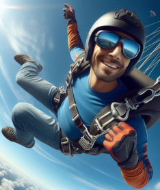

NOSSA EQUIPE DE DOIDOS
Pablo Vavrik (SABIÁ), paraquedista, programador e professor de educação física nas horas vagas. Com mais de 2 mil saltos de paraquedas, Pablo tem experiência e total conhecimento para te acompanhar durante o salto.

Uatila Santos (KAMIKAZE), paraquedista e programador, com mais de 2500 saltos de paraquedas em sua carreira. Mimistra treinamentos para pessoas que queiram saltar sozinhos de paraquedas, formou mais de 180 novos paraquedistas.
Thainá Santos (THAINÁ DO BALÃO), paraquedista, balonista e progrtamadora. Com mais de 2 mil horas de voo de balão e mais de 2000 mil saltos de paraquedas, Thainá é a pessoa perfeita para conduzir seu passeio de balão.
Lucas Silva (CORINTHIANO), paraquedista e programador, Lucas possui mais de 2500 saltos, tem grande experiência em salvamentos e iniciou sua carreira no exército no pelotão de paraquedismo.